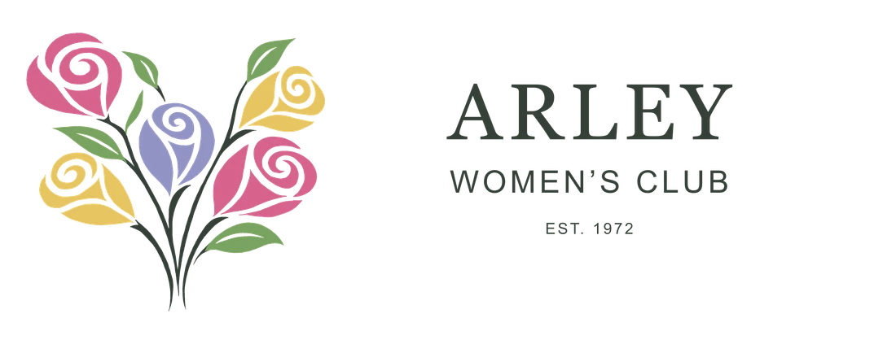
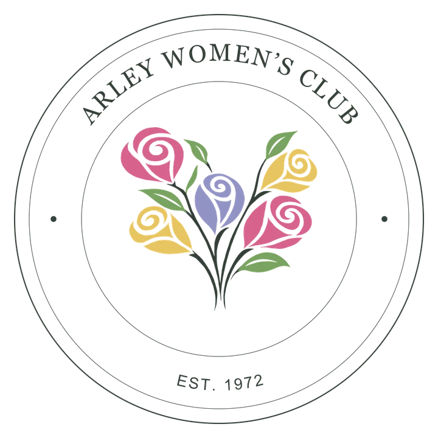
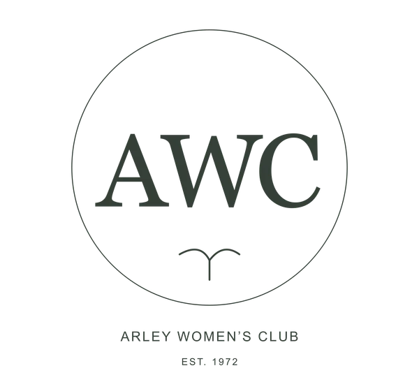
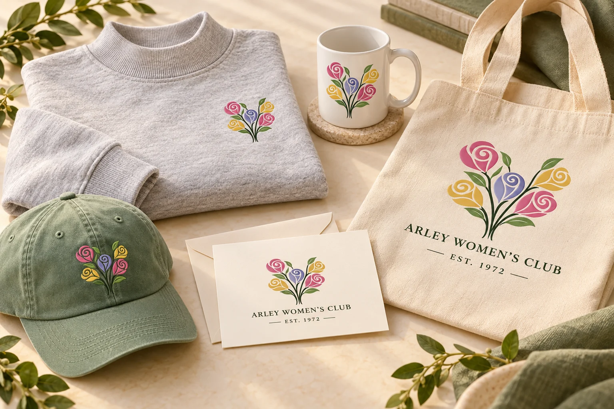

Women, woven in.
The rising stems suggest a subtle W for Women. It is a gentle detail rather than a literal letter—a reminder that the club’s work begins with women coming together.
OUR DESIGN · OUR ROOTS
A familiar bouquet, thoughtfully refreshed. A symbol of the women who help our community grow.
Our new identity begins with the spiral flowers of the original Arley Women’s Club logo. We kept their warmth, color and sense of growth, then refined the lines into a more timeless mark—one that feels at home today and for years to come.
Follow the story
A THREAD FROM THEN TO NOW
The new bouquet carries the spirit of the original forward, with simpler shapes, gentler curves and a more balanced silhouette.
MORE THAN A FLOWER
The rising stems suggest a subtle W for Women. It is a gentle detail rather than a literal letter—a reminder that the club’s work begins with women coming together.
Distinct blooms grow from a connected arrangement, much like members bringing their own talents to a shared purpose. The bouquet speaks to friendship, belonging and the strength of working as a team.
Flowers and leaves echo the places we nurture: our library, classrooms, parks and community spaces. Their upward movement reflects what happens when we invest time and care close to home.
FAMILIAR COLOR. FRESH EXPRESSION.
Rose, golden yellow and lavender keep the bouquet bright and welcoming. Greens ground it in our connection to Arley and the spaces we care for. Together, they feel friendly, hopeful and alive.
ONE IDENTITY, MANY PLACES
From club stationery to a favorite sweatshirt, the identity stays connected to its roots. Every version carries our name, our founding year or the familiar floral emblem.



POSSIBILITIES WORTH EXPLORING
Imagine the identity becoming something you can wear, share or carry into your day. A thoughtful collection could celebrate belonging—and help the good we do in Arley keep growing.

Soft heather gray, a small floral chest mark and an easy, timeless shape.
A sage cap with a subtle embroidered bouquet—ready for a walk or a day of volunteering.
Warm, welcoming notes for thank-yous, club correspondence and thoughtful little hellos.
A cheerful floral touch for morning coffee, book club or a gift to a friend.
A natural canvas bag for library books, market finds and whatever the day brings.
A THOUGHTFUL THANK-YOU
Selected pieces could become member gifts or thank-you gifts connected to a future donation campaign—a meaningful reminder of the community someone helped support.
A SIMPLE WAY TO SUPPORT
A future fundraising collection could let members and neighbors buy a favorite piece while supporting the club’s work in our schools, library, parks and community programs.
ROOTED IN SERVICE SINCE 1972
To support our neighbors. To care for the place we call home. To grow something good, together.
Meet the clubGROW SOMETHING GOOD
A little time. A shared idea. A willingness to help. That is where community begins.
Join AWC